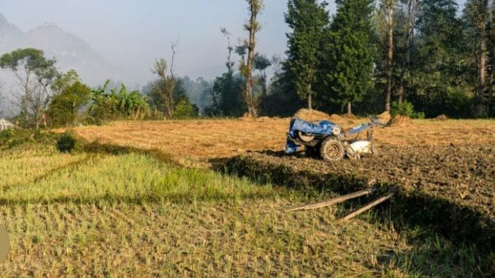

Environmental Policy, Governance & Justice
Advancing inclusive environmental governance by shaping policies, supporting carbon market regulation, and advocating for environmental justice to ensure all communities—especially marginalized groups—have a voice in decision-making and resource management.

Research, Monitoring & Institutional Strengthening
Conducting environmental research, impact assessments, and data-driven monitoring to inform policy, while strengthening the capacity of government institutions and local organizations to effectively enforce environmental regulations.

Climate Resilience, Ecosystem Restoration & Agriculture
Designing and implementing climate adaptation projects, restoring degraded ecosystems, and promoting climate-smart agriculture practices that enhance food security and help communities withstand environmental challenges.

Geotechnical Engineering, Waste Management & Sustainable Energy
Providing geotechnical and geological solutions for infrastructure development, alongside developing waste management systems and promoting renewable energy to support sustainable and resilient communities.